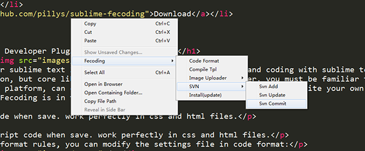

Fecoding默认内置的插件有如下几种：
CSS格式化
格式化CSS代码，不管是在css文件内，还是在html内，只要是css代码，它都能完美的帮你格式化。
JavaScript格式化
格式化javascript代码，不管是在css文件内，还是在html内，只要是javascript代码，它都能完美的帮你格式化。
如果你想改变格式化代码的规则，你需要修改code format的默认设置：

编译模板
NodeTpl是一款功能强大的前端模板引擎，你一定很熟悉，该插件可以完美地编译NodeTpl文件。
SVN管理
如果你的团队是在用SVN管理代码的，那么，使用该插件，可以非常方便地对文件进行SVN管理，包括提交、新增、更新操作。

图片上传
编辑器能够自动上传页面中的图片文件吗？
没错，正如大家所期待的，在编辑器中可以如我们所愿，自动上传选中代码片段中的图片到服务器，然后替换成上传后的http图片地址。